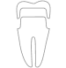
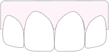

Front Bridges
A Solid Approach
A front bridge will replace a missing tooth while augmenting the adjacent teeth. The end result yields uniform esthetics and design for your smile.
What to expect
At the appointment
-
 Duration 60-90 min
Duration 60-90 min -
 Oral
anesthetic use
Oral
anesthetic use -
 Possible minor sensitivity
Possible minor sensitivity -  Tooth colored temporary or final
After Appoinment
-
Possible post operative sensitivity to temperature changes
-
 Avoid eating until numbness wears off
Avoid eating until numbness wears off
What it is
There are many ways to replace a missing tooth
Typically a bridge is used for
- Replacement of a missing tooth
- Esthetic or functional improvement of neighboring teeth
- Implant options are not viable

Pros
- Bridged teeth look uniform is shape and color

- Adds reinforcement to broken neighboring teeth
Cons
- May require cutting down perfectly healthy teeth
- No additional reinforcement to broken neighboring teeth
How it is accomplished
The teeth are built up in composite as necessary for future preparation

Built up teeth are prepared for a bridge

A temporary bridge made as a place holder
Later the temporary bridge is removed and a final is cemented in its place
Materials
- Zirconia Also known as zirconia based ceramics are the strongest ceramic materials available in dentistry today. The trade off of the material is that it is the least esthetic. Zirconia crowns always look flatter in color and do not have the depth and translucency that natural teeth display. This material is ideal for molar crowns in the back of the mouth.
- Porcelain The best looking material available in dentistry. Glassy matrix of porcelain materials creates translucency and depth of colors that is found in natural teeth. This also happens to be the weakest type of crown material. Perfect use of porcelain would be on the front teeth where biting stresses are smallest and need for esthetic appearance is greatest.